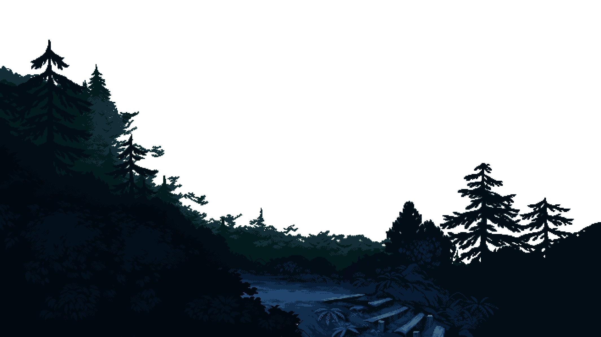
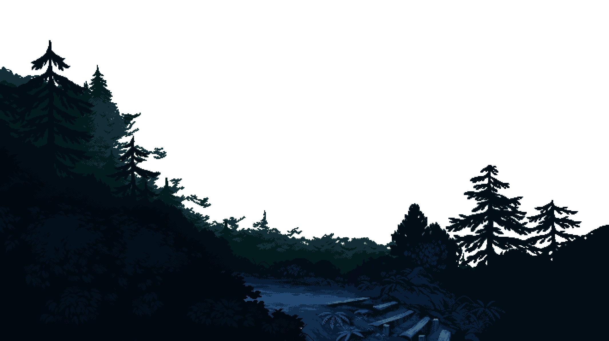

Nyndes
 


Travar no primeiro passo é comum, não é regra. Talvez por uma falha no sentimento que nos permite compreender a totalidade de nosso mundo interior ou pela falta de conduta que nos assegura do bem-estar, ou bom funcionamento, do nosso sistema socio-profissional. Imbatível ou um grande entusiasta da positividade, da leitura correta do Karma que nos rodeia. Um cidadão que corre do lado oposto da via lenta, abusiva e inundada de puro ego. Um vencedor, que não esconde o coração, não economiza linhas e nem referências. Aquele que nem sempre prefere a vitória e honra a glória de chorar. Em qual via seguir? Servir de acordo com os nossos dons ou administrar obedecendo as injustas regras de um sistema baseado em CEP? Responder tal pergunta nos posiciona como insubmissos, incapazes de seguir adiante sem manifestar uma conduta indomável. Surgir, como pessoa, talvez exija tal resposta; talvez. Romper a barreira do medo que nos impede de surgir significa apanhar a caneta, assumir o leme, resistir aos erros, saborear o amargo, plantar antes de colher e então perceber que o doce ganhado não chega aos pés daquele que foi conquistado. Integridade compõe a maior parte da invencibilidade e ser invencível jamais será uma questão sobre vencer, trata-se de perseverança.